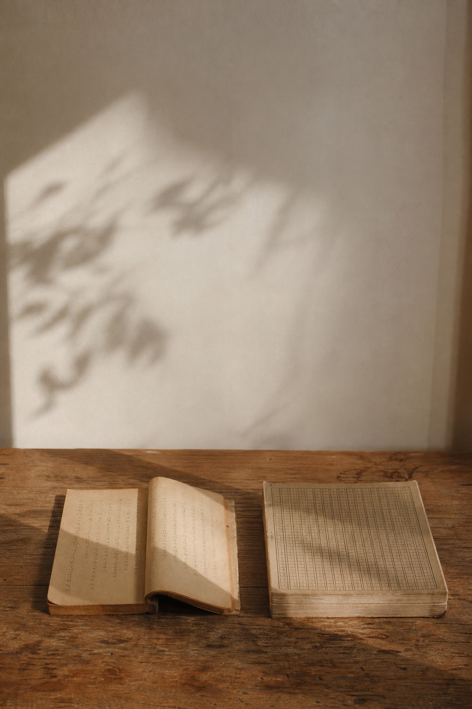
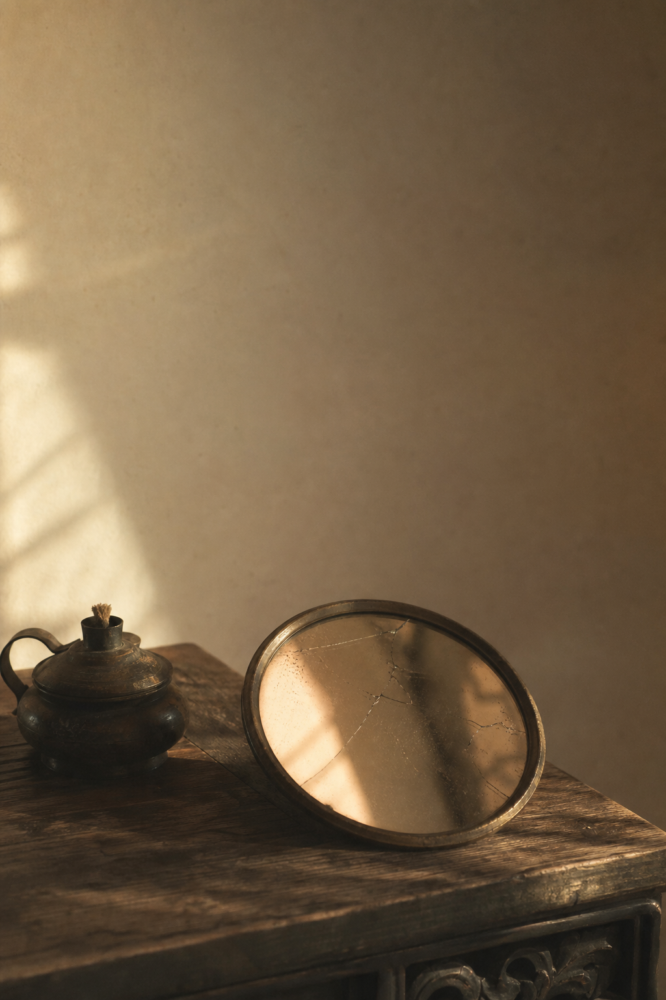
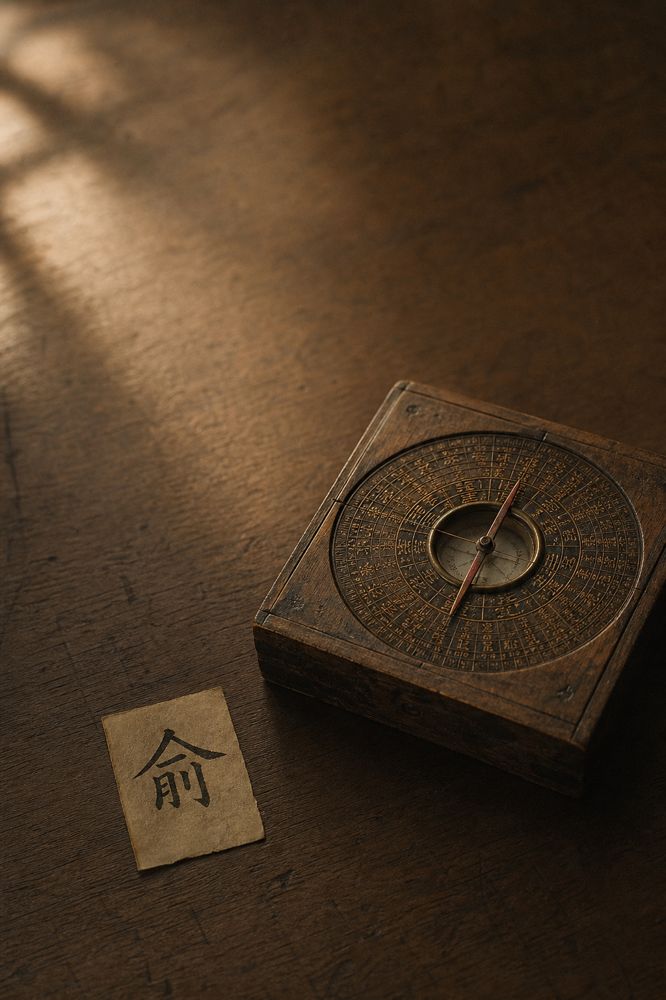
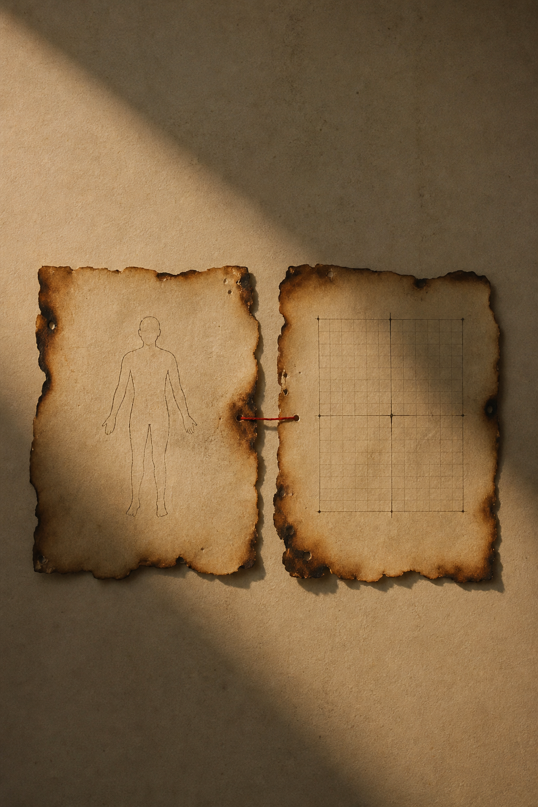

写在最前：这是我读《黄帝内经》的学习笔记，不是教学。我读得慢、读得浅，会读错，下面这条把两篇经文缝在一起的"暗线"，也可能是我的过度解读，欢迎指正——但请不要把我写的任何内容当作就医建议。
阶段小结：回看第二阶段第十到第十七篇，《素问·生气通天论》+《素问·金匮真言论》。
第二阶段读完了，第十到第十七篇，八篇。它跨了两本经文：《生气通天论》（10-14）和《金匮真言论》（15-17）。
写第二本的时候我一直有个别扭：这两本，读起来根本不像在讲同一件事。直到把八篇连起来摆在桌上，我才看出来——它们不是两件事，是一件事的两半。

《生气通天论》是讲道理的：阳气像太阳、风是百病之始、别烦劳别暴怒、谨和五味。像长辈拉着你说"别糟践自己"。
《金匮真言论》是列表格的：东方青色入通于肝、其味酸、其畜鸡、其谷麦、其音角、其数八……冷冰冰的对应，像在背元素周期表。
一个温情，一个枯燥。我一度怀疑是编排顺序出了错。后来才明白：放在一起，恰恰是对的。

《生气通天论》那五篇，压成一句：病，多数时候不是天降的，是自伤。
「虽有贼邪，弗能害也」——邪一直都在，害不了你；害得了你的，是「卫气散解，此谓自伤」。阳气是电源，风只是开门的，煎厥薄厥是自己点的火，五味过量是自己下的手。整篇没有一味药，全是"别"。
上半场回答的是：病是怎么来的？ 答案：很多是你自己招的。
翻到《金匮真言论》，画风突变，它开始干一件很理工科的事——给五脏建坐标系。
第十五篇立方位季节：「东风生于春，病在肝，俞在颈项……」第十六篇撑成巨型大表：颜色、开窍、味道、物类、牲畜、谷物、五音、数字，到"病在筋/脉/肉/皮毛/骨"。第十七篇再加一维——「阴中有阴，阳中有阳」，分了还能再分。
下半场回答的是：身体的事，发生在哪？ 答案：在这张越画越细的地图上。
读到那张九行大表时，我生理性抗拒：肝青心赤脾黄肺白肾黑、肝酸心苦脾甘肺辛肾咸、肝八心七脾五肺九肾六……仿佛回到高中。
读中医，是不是就是把这种表一张张背下来？我卡了好几天，越背越觉得它离我十万八千里——我又不当大夫，记住"肝的数是八"有啥用？
直到把它和上半场摆到一起，才发现自己搞反了方向。

让我转过弯的，是一个被我忽略的字——俞。「病在肝，俞在颈项。」
古人记下"肝病常表现在颈项"，不是为了考试，是为了反查：颈项出问题，往肝上想；某季节总犯同一类毛病，往那个脏想。
方向不是"背下属木推出青色"，而是反过来——哪处亮红灯，顺着表把源头找回去。所以它是一台定位仪：颜色不对、总想吃某个味、老在某季节犯病、某部位反复出事——全是输入信号。表越细，不是负担，是精度。

两本书"啪"地合上了：上半场说"病是自伤"（为什么报警），下半场给"坐标定位"（在哪报警）。
只看上半场，知道坏了却不知坏在哪（亮了故障灯没仪表盘）；只看下半场，有表却不知它指向什么（有仪表盘不知为何看它）。
缝起来，就是一张报警地图。第二阶段先用《生气通天论》教你认账，再用《金匮真言论》给你定位。先认账，再定位。
最玄的"阴中有阴"，其实最实用。白天还能分上午（阳中之阳）和下午（阳中之阴），分了再分。
放回"定位仪"框架：它在说这张地图的分辨率可以无限放大。刻度越密，越能把一个反复在某时段发作的毛病钉到更小的格子里。阴阳不是非黑即白的二分，是一把能一直往下细分的尺子。
如果只留一句：先认账，再定位。
不舒服别急着往外甩锅，先问是不是自伤；再顺着身体给的信号（颜色、味道、季节、部位）找到是哪一格出问题。这不需要你背那张大表——表是大夫用的，信号是你自己就能读的。
今天能做的两件事（生活观察，不是治疗方案）：
1. 认账一次。挑一个反复出现的小毛病，先别怪环境，问自己：是不是我自己在某处耗过头了？
2. 读一个信号。留意身体最近有没有固定的偏好或规律——总想吃某个味、脸色某处发暗、老在某时段犯困烦躁。先不下结论，只记下来。
认账让你停止往外甩锅，读信号让你开始往里观察。这差不多就是第二阶段给一个学渣的全部。
下一阶段是整个系列公认最硬的部分——《素问·阴阳应象大论》。「阴阳者，天地之道也，万物之纲纪……」我做好了被虐的准备。第三阶段见。